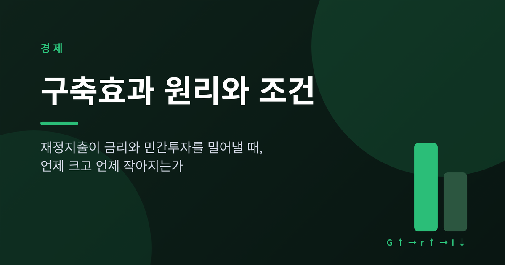
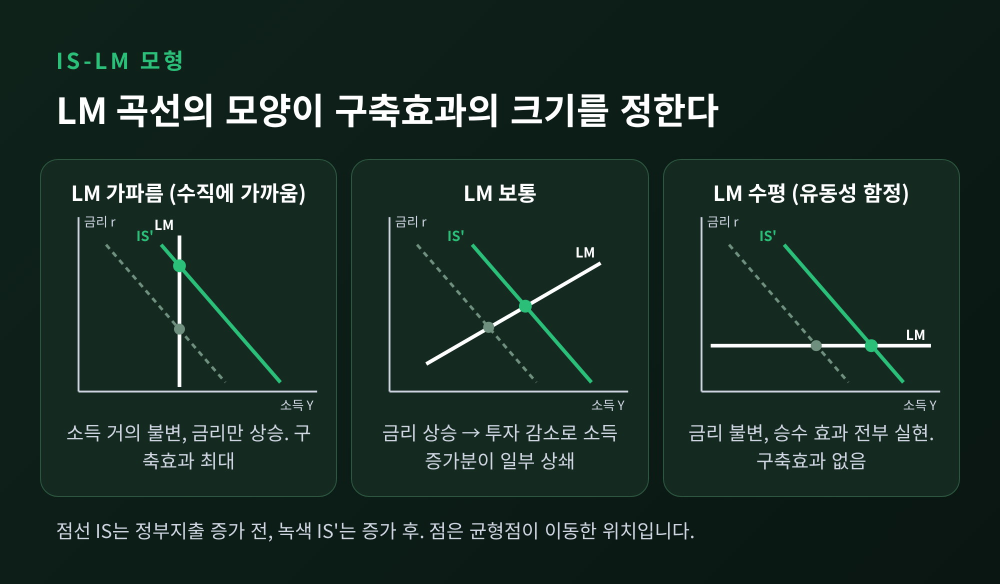
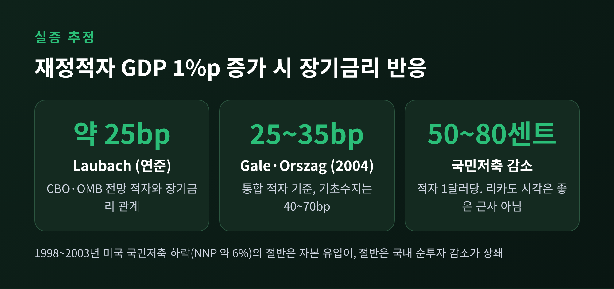
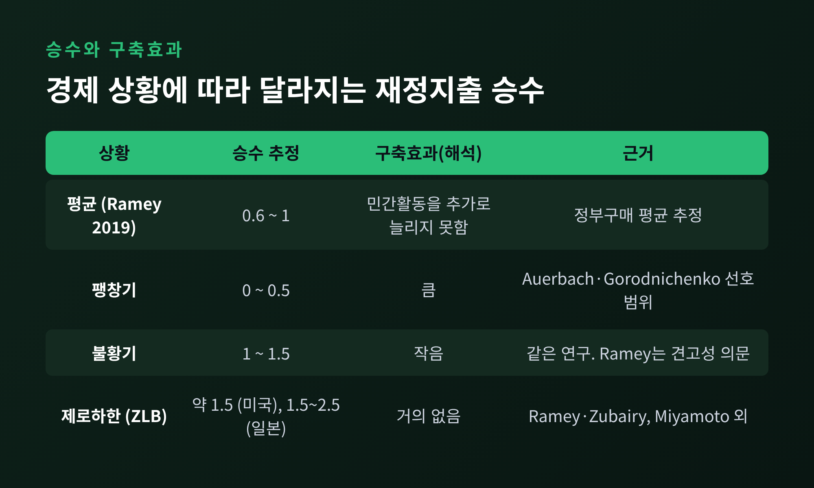
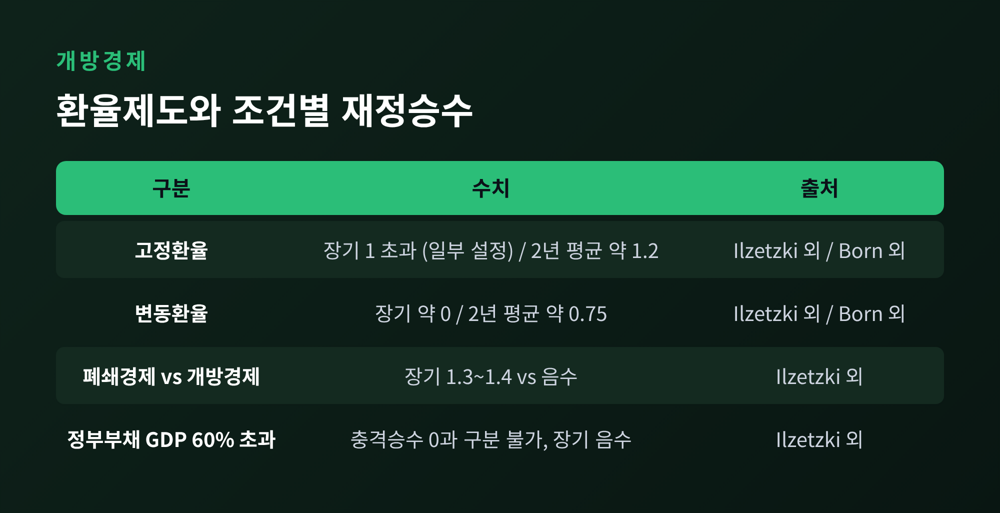
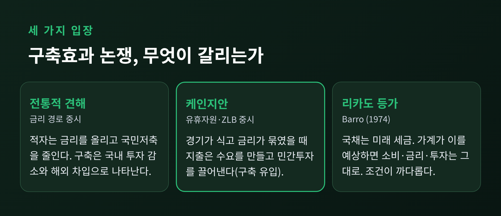

오늘은 구축효과(crowding out)에 대해 이야기해 보려 합니다. 정부가 돈을 더 쓰면 국채 금리가 오르고 민간투자가 줄어든다는 주장인데, 늘 맞는 말은 아닙니다. 경제가 놀고 있는 자원이 많은지, 중앙은행이 금리를 어떻게 다루는지, 환율제도가 무엇인지에 따라 결과가 달라집니다. 핵심만 먼저 적으면 이렇습니다. 구축효과는 완전고용에 가깝고 금리가 움직일 여지가 있을 때 커지고, 불황이나 제로금리 국면에서는 작아집니다.
구축효과는 정부 지출이 민간의 지출을 대신 차지해 버리는 현상을 말합니다. 대개는 적자 재정이 민간투자를 줄이는 경우를 가리킵니다.
경로는 크게 세 가지로 나눌 수 있습니다.
첫째는 금리 경로입니다. 정부가 국채를 발행해 돈을 빌리면 한정된 대부자금을 두고 민간 기업과 경쟁하게 됩니다. 자금을 끌어오려면 금리가 올라야 하고, 금리가 오르면 수익성이 낮은 투자 계획부터 접힙니다.
둘째는 자원 경로입니다. 이미 일자리와 설비가 가득 차 있다면, 정부가 쓰는 만큼 민간이 쓸 몫이 줄어듭니다. 돈의 문제가 아니라 실물의 문제입니다.
셋째는 국제 경로입니다. 변동환율제에서 금리가 오르면 해외 자금이 들어와 통화가 강해지고, 수출 기업이 타격을 받습니다.
거시경제학 교과서는 이 과정을 IS-LM 모형으로 설명합니다. 정부지출이 늘면 IS 곡선이 오른쪽으로 움직입니다. 승수 효과로 소득이 늘어납니다.
소득이 늘면 거래에 필요한 화폐가 더 필요해집니다. 화폐 공급이 그대로라면 이자율이 오릅니다. 이자율 상승은 투자를 줄이고, 그만큼 처음의 소득 증가분이 깎입니다. 이 깎여 나간 부분이 구축효과입니다.
얼마나 깎이느냐는 LM 곡선의 모양이 정합니다. LM이 가파를수록, 즉 화폐수요가 소득에 민감하고 이자율에는 둔감할수록 금리가 크게 뜁니다. 극단적으로 LM이 수직이면 소득은 전혀 늘지 않고 금리만 오릅니다. 완전 구축입니다. 반대로 LM이 수평이면 금리가 꿈쩍하지 않아 승수 효과가 온전히 실현됩니다. 이것이 유동성 함정의 그림입니다. IS 곡선이 평평한 경우, 곧 투자가 금리에 민감한 경우에도 구축효과는 커집니다.

케인스가 양차대전 사이 영국 재무부의 입장, 이른바 재무부 견해를 비판한 것도 이 논쟁의 연장선에 있습니다. 예전엔 정부 지출이 민간 몫을 그대로 빼앗는다고 보았습니다. 지금은 경제 상태에 따라 다르다고 봅니다.
이론은 그럴듯해도 숫자로 확인해야 합니다. 미국 연준의 Thomas Laubach는 CBO와 OMB의 장기 전망을 이용해 경기변동과 통화정책의 영향을 걸러 냈습니다. 전망 재정적자가 GDP의 1%포인트 늘면 장기금리는 약 25bp 오른다는 결과였습니다.
Gale과 Orszag의 2004년 브루킹스 연구도 비슷합니다. 지속적인 전망 적자가 GDP의 1% 늘면 장기금리가 25~35bp 오르고, 이자 지급을 뺀 기초 수지 기준으로는 40~70bp입니다. 이들은 여러 연구를 종합하며 추정치가 놀랄 만큼 수렴한다고 평가했습니다.
두 연구는 한 가지를 더 보여 줍니다. 구축이 모두 국내 투자 감소로만 나타나지는 않습니다. 1998년부터 2003년까지 미국의 국민저축이 NNP의 약 6% 줄었는데, 절반 정도는 해외 자본 유입이 메웠고 나머지 절반은 국내 순투자 감소로 이어졌습니다.

다만 이 숫자를 곧바로 현실에 대입하면 곤란합니다. 평균적 관계일 뿐이고, 같은 적자라도 경기와 통화정책에 따라 금리 반응은 크게 달랐습니다. 2008년 이후 미국 연방 차입이 급증했지만 금리는 오히려 내려갔다는 지적이 대표적입니다.
반대편에는 Robert Barro의 1974년 논문이 있습니다. 국채는 결국 미래 세금으로 갚아야 하는 빚입니다. 가계가 이를 정확히 내다본다면 국채가 늘어도 자신이 부유해졌다고 느끼지 않고, 미래 세금에 대비해 저축을 늘립니다. 소비도 금리도 투자도 바뀌지 않습니다.
이 결론은 조건이 까다롭습니다. 부모가 자녀에게 실제로 유산을 남기고 있어야 하고, 자본시장이 완전해야 하며, 세금 부담이 누구에게 얼마나 돌아갈지 분명해야 합니다. Barro 자신도 국채를 순자산으로 볼 설득력 있는 이론적 근거가 없다고 정리했을 뿐, 현실에서 항상 성립한다고 말하지는 않았습니다.
실증은 엇갈립니다. Gale과 Orszag는 적자 1달러가 국민저축을 50~80센트 줄인다고 추정하며 리카도 시각이 좋은 근사는 아니라고 보았습니다. 소비 연구를 정리한 문헌들은 결론을 내리지 못하거나, 기각하거나, 기각하지 못한다고 서로 다르게 답합니다.
구축효과가 힘을 잃는 대표 조건은 경제가 놀고 있을 때입니다. 일자리와 설비가 남아돌면 정부 지출이 민간 몫을 빼앗는 대신 새 수요를 만듭니다. 기업이 물건이 팔리니 투자를 늘리는 구축 유입(crowding in)이 가능해집니다.
금리 쪽에서도 마찬가지입니다. 중앙은행이 정책금리를 0 근처에 묶어 둔 상태라면 정부 차입이 늘어도 금리가 오르지 않습니다. Christiano, Eichenbaum, Rebelo는 명목금리가 제로하한에 걸려 있을 때 정부지출 승수가 1보다 훨씬 커질 수 있다고 보였고, 제로금리 기간에 이뤄지는 지출 비중이 클수록 승수도 커진다고 했습니다.
실증도 이를 일부 뒷받침합니다. Auerbach와 Gorodnichenko는 불황기 승수가 팽창기보다 훨씬 크다고 보고했습니다. 저자들이 제시한 선호 범위는 팽창기 0~0.5, 불황기 1~1.5입니다. Blanchard와 Leigh의 IMF 연구는 선진국의 재정긴축기에 GDP가 예측보다 크게 부진했던 이유를, 예측 기관이 승수를 0.5 안팎으로 낮게 잡았기 때문으로 해석했습니다. 긴축 1%포인트당 성장률이 예측보다 약 1% 낮았습니다.

그러나 이 결과를 그대로 받아들이기는 이릅니다. Ramey의 2019년 정리에 따르면 평균적인 정부구매 승수는 0.6~1 정도입니다. 불황기에 승수가 크다는 증거는 분석 방법에 민감해서, 더 견고한 방법으로 보면 불황에서도 1 이하로 나옵니다. 제로하한 증거는 "다소 더 강하다"고 평가됩니다. 미국 역사 자료에서 약 1.5, 일본에서 1.5~2.5라는 추정이 있습니다. 한계는 분명하지만, 금리가 묶여 있다는 조건이 가장 일관되게 승수를 키운다는 점은 눈여겨볼 만합니다.
먼델-플레밍 모형은 자본이 자유롭게 움직이는 나라에서 변동환율이면 재정 확대의 효과가 약하다고 예측합니다. 금리가 오르면 자본이 들어와 통화가 절상되고 순수출이 줄어 효과가 상쇄된다는 논리입니다. 고정환율에서는 중앙은행이 금리 상승을 막으려 돈을 풀기 때문에 재정이 힘을 얻습니다.
Ilzetzki, Mendoza, Végh는 44개국 분기 자료로 이를 점검했습니다. 고정환율 국가는 장기승수가 1을 넘는 설정이 있었고, 변동환율 국가는 사실상 0이었습니다. 무역에 덜 열린 나라의 장기승수는 1.3~1.4 수준이었고, 많이 열린 나라는 음수였습니다. 중앙정부 부채가 GDP의 60%를 넘으면 충격승수가 0과 구분되지 않았고 장기승수는 음수였습니다.
흥미로운 것은 그 이유입니다. Born, Jüßen, Müller가 OECD 국가를 분석해 보니 2년 평균 승수는 고정환율에서 약 1.2, 변동환율에서 약 0.75였습니다. 차이는 있지만 먼델-플레밍이 예측한 만큼 크지 않았고, 변동환율에서도 순수출은 유의하게 반응하지 않았습니다. 고정환율에서는 실질금리가 내려가고 변동환율에서는 올라간다는 통화정책 반응의 차이가 격차를 설명했습니다. 환율 경로보다 중앙은행이 어떻게 반응하느냐가 핵심이라는 뜻입니다.

정리하면 논쟁은 몇 군데에서 갈립니다. 불황기 승수가 정말 큰가, 평균 승수가 1에 못 미치는가, 리카도 등가가 어느 정도 성립하는가, 개방경제의 구축은 환율을 통하는가 중앙은행을 통하는가입니다. 이 질문들 모두 연구자마다 답이 다릅니다.
실무적으로는 이렇게 읽는 편이 안전합니다. 구축효과의 크기는 재정 지출 자체보다 그때의 경제 상태와 통화정책의 조합이 정합니다. 같은 100조 원이라도 경기가 식고 금리가 바닥인 해와 물가가 달아오르고 금리를 올리는 해에는 전혀 다른 결과를 낳습니다. 또한 국채 발행이 쌓이면 장기적으로 국민저축이 줄고 이자 부담이 커집니다. CBO의 장기 시나리오에서 정부 차입이 민간투자를 기본 가정보다 두 배로 밀어내면 2055년 부채는 GDP의 250%를 넘고, 전혀 밀어내지 않으면 125%에 머뭅니다. 기본 전망은 156%입니다.

결국 남는 것은 하나입니다. 구축효과는 있거나 없는 현상이 아니라, 조건에 따라 커지고 작아지는 크기의 문제입니다.
"얼마나 쓰느냐보다 언제, 어떤 통화정책 아래에서 쓰느냐." 저는 이 한 줄이 논쟁의 가장 쓸모 있는 요약이라고 생각합니다.
정부가 돈을 쓰면 민간이 밀려나느냐고 물으신다면, 경제가 얼마나 꽉 차 있고 금리가 얼마나 자유로운지를 먼저 확인하시라고 답하겠습니다.
#구축효과 #재정지출 #IS-LM #재정승수 #유동성함정 #리카도등가 #먼델플레밍 #국채금리 #민간투자 #재정정책